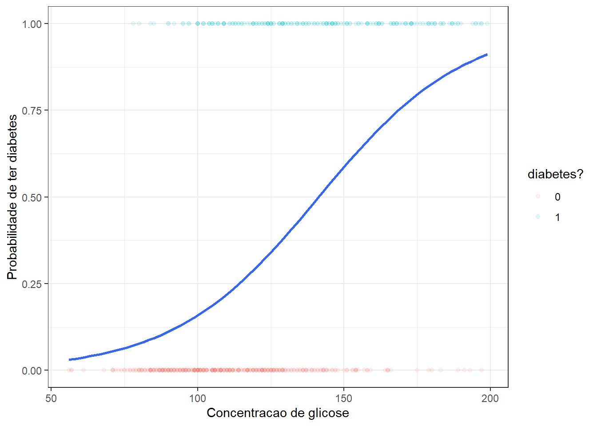
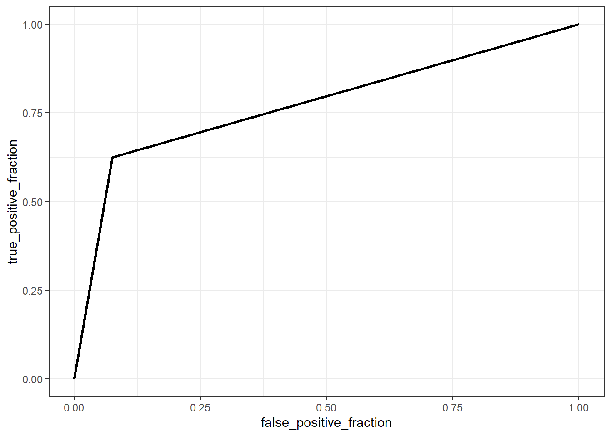

13 Classificação via regressão logística
13.1 Regressão logística binária simples
Seja um supervisor uma variável categórica com duas categorias, \(y \in \{c_1,c_2\}\), dita binária ou dicotômica, a qual suspeita-se ser dependente de uma única variável contínua ou real, \(x\), \(x \in \mathcal{R}\). Respostas binárias incluem categorias “sim” e “não” ou “sucesso” e “fracasso”. Um modelo de regressão logística visa prever a probabilidade de sucesso dado um valor de x, isto é \(p(y=sucesso|x)\). O sucesso deve ser entendido não literalmente, mas como a categoria de mais interesse a ser prevista. Obviamente, a remanescente terá probabilidade complementar.
Considere o caso onde deseja-se prever se a pessoa compra ou não um iphone de última geração tomando como variável independente o seu salário. Tais categorias são codificadas respectivamente em 1 e 0. A Figura 13.1 ilustra algumas observações de tal problema, onde o salário é plotado no eixo horizontal e indivíduos que compraram iphone são marcados em círculos vermelhos e codificado em zero no eixo vertical, enquanto indivíduos que compraram são marcados em triângulos azuais e codificados em 1 no eixo vertical.
Inicialmente alguém poderia pensar em estimar uma reta via mínimos quadrados para prever a probabilidade do indivíduo comprar o iphone segundo o seu salário, isto é:
\[ p(y=1|x) =\beta_0+\beta_1x \]
Tal procedimento resultaria na regressão da Figura 13.2. O problema é que a reta obtida prevê probabilidades negativas para salários menores que R$3200 reais e probabilidades maiores que 1 para salários maiores que R$19300. Tais previsões são irreais, uma vez que \(p(y) \in [0,1]\).

Para garantir previsões no domínio da probabilidade, podem ser aplicadas diversas funções. A função logit ou sigmoid é uma delas. Estas função é definida matematicamente segundo a Equação 13.1 e plotada na Figura 13.3.
\[ p(z)=\frac{1}{1+e^{-z}}=\frac{e^z}{e^z+1} \tag{13.1}\]

Aplicando um modelo linear em função da variável independente em tal função, isto é, fazendo \(z=\beta_0+\beta_1x\), obtém-se o modelo de regressão logística, conforme Equação 13.2.
\[ p(y=1|x) = \frac{1}{1 + e^{-(\beta_0+\beta_1x)}} \tag{13.2}\]
O ajuste de um modelo de regressão logística para o exemplo do iphone resulta na função plotada na Figura 13.4.

Sabendo que a probabilidade da outra classe é o complementar, isto é, \(p(y=0|x)=1-p(y=1|x)\), pode-se obter o inverso da função logit, ou mais diretamente, da função de regressão logística, conforme segue.
\[ \begin{matrix} p(y=0|x)=1-p(y=1|x) \\ p(y=0|x)=1-\frac{1}{1 + e^{-(\beta_0+\beta_1x)}} \\ p(y=0|x)=\frac{1 + e^{-(\beta_0+\beta_1x)}-1}{1 + e^{-(\beta_0+\beta_1x)}} \\ p(y=0|x)=\frac{e^{-(\beta_0+\beta_1x)}}{1 + e^{-(\beta_0+\beta_1x)}} \\ \end{matrix} \]
Tomando a razão entre \(p(y=1|x)\) e \(1-p(y=1|x)\) ou \(p(y=0|x)\), chamada de razão de chance ou odds ratio, tem-se:
\[ \frac{p(y=1|x)}{1-p(y=1|x)} = e^{\beta_0+\beta_1x}. \]
Tal razão tem domínio entre 0 e \(\infty\), com uma razão unitária indicando chance igual de ocorrência de ambos grupos, uma razão maior que 1 indicando maior chance de ocorrência do grupo 1 e uma razão menor que 1 indicando maior probabilidade de ocorrência do grupo 0. Aplicando logaritmo em ambos os lados do último resultado, verifica-se que o modelo de regressão logística (entenda-se aqui log como o logaritmo neperiano), obtido a partir da aplicação da função logit, pode ser concebido como um modelo de regressão linear simples para o log da razão de chance, conforme Equação 13.3. O lado esquerdo da relação é chamado de log-odds ou logit, que viabiliza a obtenção da subtração das probabilidades em escala log, \(\text{log }\frac{p}{(1-p)} = \text{log } p - \text{log }(1-p)\). Ademais, o logit permite converter a probabilidade que tem dom+inio de 0 a 1 para uma resposta que tem domínio em \((-\infty,+\infty)\).
\[ \text{log } \biggl(\frac{p(y=1|x)}{1-p(y=1|x)}\biggr) = \beta_0+\beta_1x \tag{13.3}\]
13.2 Estimativa dos coeficientes do modelo de regressão logística
A estimativa dos coeficientes do modelo de regressão é realizada pela maximização da função de verossimilhança. Para simplificar a notação, considere \(p(y_i|x_i,\beta_0,\beta_1)=p(x_i)\). Seja o log da máxima verossimilhança expresso conforme segue.
\[ \begin{align} l(\beta_0,\beta_1) &= \text{log } \prod_{i=1}^Np(x_i) \\ l(\beta_0,\beta_1) &= \text{log } \prod_{i=1}^N p(x_i)^{y_i}\bigl[1-p(x_i)\bigr]^{1-y_i}\\ l(\beta_0,\beta_1) &= \sum_{i=1}^N \text{log } \bigl\{ p(x_i)^{y_i}\bigl[1-p(x_i)\bigr]^{1-y_i} \bigr\} \\ l(\beta_0,\beta_1) &= \sum_{i=1}^N y_i\text{log } p(x_i) + (1-y_i)\text{log }\bigl[1-p(x_i)\bigr] \\ l(\beta_0,\beta_1) &= \sum_{i=1}^N y_i\text{log } \Bigl( \frac{p(x_i)}{1-p(x_i)} \Bigr) + \text{log }\bigl[1-p(x_i)\bigr] \\ l(\beta_0,\beta_1) &= \sum_{i=1}^N y_i(\beta_0+\beta_1x_i) + \text{log } \Bigl(1- \frac{1}{1+e^{-(\beta_0+\beta_1x_i)}} \Bigr) \\ l(\beta_0,\beta_1) &= \sum_{i=1}^N y_i(\beta_0+\beta_1x_i) + \text{log } \Bigl( \frac{e^{-(\beta_0+\beta_1x_i)}}{1+e^{-(\beta_0+\beta_1x_i)}} \times \frac{e^{(\beta_0+\beta_1x_i)}}{e^{(\beta_0+\beta_1x_i)}} \Bigr) \\ l(\beta_0,\beta_1) &= \sum_{i=1}^N y_i(\beta_0+\beta_1x_i) + \text{log } \Bigl( \frac{1}{1+ e^{(\beta_0+\beta_1x_i)}} \Bigr) \\ l(\beta_0,\beta_1) &= \sum_{i=1}^N y_i(\beta_0+\beta_1x_i) - \text{log } \bigl( 1+ e^{(\beta_0+\beta_1x_i)} \bigr) \\ \end{align} \]
Considerando o modelo de regressão logística em notação matricial, podemos reescrever a função do log da verossimilhança, conforme Equação 13.4.
\[ l(\beta) = \sum_{i=1}^N y_i(\beta^T\mathbf{x}_i) - \text{log } \bigl( 1+ e^{(\beta^T\mathbf{x}_i)} \bigr) \\ \tag{13.4}\]
O vetor \(\beta\) considera ambos os coeficientes \(\beta = [\beta_0,\beta_1]^T\) enquanto o vetor \(\mathbf{x}_i\) considera a constante e a observação da variável regressora, \(\mathbf{x}_i = [1,x]^T\). Para maximizar o log da verossimilhança, igualamos a derivada da função a zero, isto é:
\[ \begin{align} \frac{\partial l(\beta)}{\partial \beta} &= \frac{\partial }{\partial \beta} \sum_{i=1}^N y_i(\beta^T\mathbf{x}_i) - \text{log } \bigl( 1+ e^{(\beta^T\mathbf{x}_i)} \bigr) \\ \frac{\partial l(\beta)}{\partial \beta} &= \sum_{i=1}^N y_i\mathbf{x}_i - \frac{e^{\beta^T\mathbf{x}_i}}{1+e^{\beta^T\mathbf{x}_i}}\mathbf{x}_i \\ \frac{\partial l(\beta)}{\partial \beta} &= \sum_{i=1}^N y_i\mathbf{x}_i - \frac{1}{1+e^{-\beta^T\mathbf{x}_i}}\mathbf{x}_i \\ \frac{\partial l(\beta)}{\partial \beta} &= \sum_{i=1}^N y_i\mathbf{x}_i - p(\mathbf{x}_i,\beta)\mathbf{x}_i \\ \frac{\partial l(\beta)}{\partial \beta} &= \sum_{i=1}^N \mathbf{x}_i(y_i - p(\mathbf{x}_i,\beta)) = 0 \\ \end{align} \]
Tal resultado consite em um sistema de duas equações não lineares para o caso simples. Para resolver este problema pode-se usar o método de Newton-Raphson. Este requer além do gradiente a derivada segunda ou a Hessiana da função do log da verossimilhança, conforme Equação 13.5.
\[ \frac{\partial^2 l(\beta)}{\partial \beta \partial\beta^T} = \sum_{i=1}^N \mathbf{x}_i\mathbf{x}_i^Tp(\mathbf{x}_i,\beta)(y_i - p(\mathbf{x}_i,\beta)) \tag{13.5}\]
Uma atualização de \(\beta\) é obtida conforme Equação 13.6.
\[ \beta_{t+1}=\beta_t - \Biggl(\frac{\partial^2 l(\beta)}{\partial \beta \partial\beta^T}\Biggr)^{-1}\frac{\partial l(\beta)}{\partial \beta} \tag{13.6}\]
Considere o caso onde deseja-se prever se uma pessoa tem ou não diabetes segundo o nível de glicose. Considere as primeiras linhas expostas na Tabela 13.1 de um conjunto de dados com observações de 763 pacientes.
| glucose | diabetes |
|---|---|
| 148 | pos |
| 85 | neg |
| 183 | pos |
| 89 | neg |
| 137 | pos |
| 116 | neg |
Seja um modelo de regressão logística para tal caso considerando como observações de treino 75% das observações disponíveis tomadas aleatoriamente.
Call:
glm(formula = diabetes ~ glucose, family = binomial, data = dados_treino)
Coefficients:
Estimate Std. Error z value Pr(>|z|)
(Intercept) -5.711728 0.510506 -11.19 <2e-16 ***
glucose 0.040409 0.003947 10.24 <2e-16 ***
---
Signif. codes: 0 '***' 0.001 '**' 0.01 '*' 0.05 '.' 0.1 ' ' 1
(Dispersion parameter for binomial family taken to be 1)
Null deviance: 734.03 on 571 degrees of freedom
Residual deviance: 591.50 on 570 degrees of freedom
AIC: 595.5
Number of Fisher Scoring iterations: 4O coeficiente relacionado ao nível de glicose apresenta significância estatística. No caso da regressão logística os coeficientes do modelo não podem ser diretamente interpretados considerando a probabilidade prevista, mas sim o log da razão de chance, de forma que neste caso apresentam interpretação similar aos coeficientes de regressão linear simples. Tal modelo pode ser plotado, conforme segue.

O modelo obtido no exemplo pode ser escrito conforme segue. Tal modelo é útil para prever a probabilidade de o indivíduo ter diabetes em função do seu nível de glicose.
\[ p(y=1|x) = \frac{1}{1 + e^{-(-5.712+0.040x)}} \]
13.2.1 Regressão logística binária múltipla
Seja o caso onde deseja-se estudar a probabilidade de sucesso de uma variável de resposta categórica binária em função de múltiplos preditores, \(x_1,x_2,\ldots,x_k\), \(p(y=1|x_1,x_2,\ldots,x_k)\).
Um modelo de regressão logística múltipla pode ser escrito conforme Equação 13.7.
\[ p(y=1|\mathbf x) = \frac{1}{1 + e^{-(\beta_0+\beta_1x_1+\beta_2x_2+\ldots+\beta_kx_k)}} \tag{13.7}\]
Seja a matrix de observações das variáveis preditoras \(\mathbf{X}_{[N\times (k+1)]}\), com \(\mathbf{\beta}_{[(k+1) \times 1]}\) como o vetor de coeficientes, \(\mathbf{y}_{[N]}\) o vetor de observações da resposta binária, \(\mathbf{p}_{[N]}\) o vetor de probabilidades ajustadas com \(i\)-ésimo elemento \(p(\mathbf{x}_i,\beta_{t})\) e \(\mathbf{W}_{[N\times N]}\) uma matriz diagonal de pesos com o \(i\)-ésimo elemento diagonal igual a \(p(\mathbf{x}_i,\beta_{t})(1-p(\mathbf{x}_i,\beta_{t}))\). Temos o gradiente e a hessina tomando tal notação conforme segue.
\[ \frac{\partial l(\beta)}{\partial \beta} = \mathbf{X}^T(\mathbf{y}-\mathbf{p}) \\ \]
\[ \frac{\partial^2 l(\beta)}{\partial \beta \partial\beta^T} = -\mathbf{X}^T\mathbf{W}\mathbf{X} \]
A atualização no método de Newton-Raphson para \(\beta\) fica conforme segue:
\[ \beta_{t+1}=\beta_t - (\mathbf{X}^T\mathbf{W}\mathbf{X})^{-1}\mathbf{X}^T(\mathbf{y}-\mathbf{p}) \]
Considerando ainda o caso onde deseja-se prever se a pessoa tem ou não diabetes, porém, não apenas em função do nível de glicose no sangue, mas também em função da idade, sejam as primeiras observações do conjunto de dados expostas na Tabela 13.2.
| glucose | age | diabetes |
|---|---|---|
| 148 | 50 | pos |
| 85 | 31 | neg |
| 183 | 32 | pos |
| 89 | 21 | neg |
| 137 | 33 | pos |
| 116 | 30 | neg |
Seja um modelo de regressão logística para tal caso, tomando novamente 75% das observações disponíveis parta treino. No caso múltiplo é importante padronizar as variáveis.
Call:
glm(formula = diabetes ~ scale(glucose) + scale(age), family = binomial,
data = dados_treino)
Coefficients:
Estimate Std. Error z value Pr(>|z|)
(Intercept) -0.8158 0.1044 -7.814 5.55e-15 ***
scale(glucose) 1.1456 0.1181 9.701 < 2e-16 ***
scale(age) 0.2568 0.1002 2.563 0.0104 *
---
Signif. codes: 0 '***' 0.001 '**' 0.01 '*' 0.05 '.' 0.1 ' ' 1
(Dispersion parameter for binomial family taken to be 1)
Null deviance: 734.03 on 571 degrees of freedom
Residual deviance: 584.94 on 569 degrees of freedom
AIC: 590.94
Number of Fisher Scoring iterations: 4Pode-se observar que o coeficiente para a idade é significativo, porém não tanto quanto o coeficiente do nível de glicose.
O modelo de regressão logística apresenta pressuposiçoes similares ao modelo de regressão linear, tais como: independência das observações, linearidade dos dados, homogeneidade dos erros, independência dos erros e ausência de multicolinearidade. Entretanto, como este curso é mais voltado para previsão e menos para inferência, será dada mais ênfase no aprendizado e acuracidade da previsão, para avaliar a capacidade de generalização do modelo.
13.3 Avaliação da capacidade de previsão do modelo de regressão
Conforme já discutido, o modelo de regressão logística é útil para prever a probabilidade de ocorrência de uma classe de interesse. No entanto,em aprendizado deseja-se classificar observações futuras. Para usar um modelo de regressão logística para tal fim deve-se discretizar a probabilidade considerando um valor de corte de interesse, geralmente \(p=0,5\).
\[ \biggl\{ \begin{matrix} \hat{y}=1\text{, se } p(y=1|\mathbf{x}) \geq 0,5 \\ \hat{y}=0\text{, se } p(y=1|\mathbf{x}) < 0,5 \\ \end{matrix} \]
A partir de tal discretização é possível obter a matriz de confusão, que resume todas as possíveis combinações de classificações considerando a realidade e o modelo, conforme Tabela 13.3.
| verdade/previsão | classe 0 | classe 1 |
| classe 0 | verdadeiro negativo | falso positivo |
| classe 1 | falso negativo | verdadeiro positivo |
A matriz de confusão a seguir apresenta os resultados do modelo de regressão logística aplicados aos 25% dos dados separados para teste para o exemplo de classificação de diabéticos. Pode-se observar que de 120 pessoas sem diabetes, \(y=0\), o modelo classifica corretamente 105 pessoas, resultando em 15 falsos positivos, enquanto de 71 pessoas com diabetes, o modelo classifica corretamente 36 e resulta em 35 falsos negativos.
pred
y 0 1
0 105 15
1 35 36A partir da matriz de confusão é possível calcular a acuracidade do modelo. De forma geral a acuracidade do modelo pode ser expressa considerando a proporção de acerto, conforme segue, onde TP é o número de verdadeiros positivos (true positive), TN é o número de verdadeiros negativos (true negative), FP é o número de falsos positivos (false positive), FN é o número de false negativos (false negative). De forma geral \(I(\hat{y}=y)\) é uma função indicativa que retorna 1, se veraddeira, sendo que a soma \(\sum I(\hat{y}=y)\) considera o total de classificações corretas, \(TP+TN\), sendo \(n\) o total de observações de teste. Para o exemplo a acuracidade é de 73,82%.
\[ Acc = \frac{TP+TN}{TP+TN+FP+FN} = \frac{\sum I(\hat{y}=y)}{n} \]
Além de ser possível constatar a falta de equilíbrio entre as duas classes, observa-se um alto número de indivíduos com diabetes classificados erroneamente. O desbalanceamento entre as classes, possivelmente também presente nos dados de treino, tem consequência na diferença de proporção entre falsos positivos e negativos. Devido ao desequilíbrio entre classes a acuracidade geral pode não ser a melhor métrica para avaliar a capacidade do modelo. O gráfico da Figura 13.6 apresenta o modelo de regressão logística múltipla obtido.

Consideremos outras variáveis regressoras no modelo de regressão logística, conforme Tabela 13.4.
| pregnant | glucose | pressure | triceps | insulin | mass | pedigree | age | diabetes |
|---|---|---|---|---|---|---|---|---|
| 1 | 89 | 66 | 23 | 94 | 28.1 | 0.167 | 21 | neg |
| 0 | 137 | 40 | 35 | 168 | 43.1 | 2.288 | 33 | pos |
| 3 | 78 | 50 | 32 | 88 | 31.0 | 0.248 | 26 | pos |
| 2 | 197 | 70 | 45 | 543 | 30.5 | 0.158 | 53 | pos |
| 1 | 189 | 60 | 23 | 846 | 30.1 | 0.398 | 59 | pos |
| 5 | 166 | 72 | 19 | 175 | 25.8 | 0.587 | 51 | pos |
O modelo obtido foi reduzido com eliminação para trás. Pode-se observar que as variáveis massa e pedigree também contribuem para melhorar o modelo, apesar de apenas a primeira variável adicional ser significativa a 0,05, além das consideradas inicialmente.
Call:
glm(formula = diabetes ~ pregnant + glucose + mass + pedigree +
age, family = binomial, data = dados_treino)
Coefficients:
Estimate Std. Error z value Pr(>|z|)
(Intercept) -0.9736 0.1618 -6.019 1.75e-09 ***
pregnant 0.2881 0.1996 1.444 0.148873
glucose 0.9876 0.1704 5.796 6.78e-09 ***
mass 0.5711 0.1618 3.530 0.000415 ***
pedigree 0.4958 0.1733 2.861 0.004225 **
age 0.3287 0.1972 1.666 0.095622 .
---
Signif. codes: 0 '***' 0.001 '**' 0.01 '*' 0.05 '.' 0.1 ' ' 1
(Dispersion parameter for binomial family taken to be 1)
Null deviance: 374.27 on 293 degrees of freedom
Residual deviance: 268.75 on 288 degrees of freedom
AIC: 280.75
Number of Fisher Scoring iterations: 5A matriz de confusão obtida é apresentada a seguir. A acuracidade para este modelo é de 82,65%.
pred
y 0 1
0 61 5
1 12 20Em problemas de classificação da área de saúde a sensitividade a especificidade são usadas, sendo a primeira a probabilidade de prever a doença dado que a pessoa é de fato doente, enquanto a especificidade consiste na probabilidade de prever como não doente dado que a pessoa de fato não o é, conforme Equação 13.8. Para o exemplo estudado, considerando o último modelo obtido, tem-se uma sensibilidade igual a 62,5% e uma especificidade igual a 92,42%.
\[ \biggl\{ \begin{matrix} Sens = \frac{TP}{TP+FN} \\ Spec = \frac{TN}{TN+FP} \end{matrix} \tag{13.8}\]
A curva ROC (receiver operating characteristics) mede graficamente a relação entre tais a sensitividade e 1 menos a especificidade, sendo plotada para o exemplo a seguir na Figura 13.7. Pode-se observar que para obter uma especificidade igual a 92% tem-se 62,5% de sensitividade.

A área abaixo da curva ROC também é utilizada como métrica de capacidade de previsão, devendo ser maximizada. Para o exemplo a curva apresentada tem área igual a 0,775 abaixo dela.
13.4 Regressão logística multinomial
Considere o caso onde a variável dependente apresenta mais de duas classes, \(y \in \{c_1,c_2,\ldots,c_Q\}\), \(Q>2\). Um modelo de regressão logística multinomial simples pode ser escrito conforme Equação 13.9.
\[ \begin{align} \text{log } \biggl(\frac{p(y=1|x)}{p(y=Q|x)}\biggr) &= \beta_{10}+\beta_1x \\ \text{log } \biggl(\frac{p(y=2|x)}{p(y=Q|x)}\biggr) &= \beta_{20}+\beta_2x \\ \vdots \\ \text{log } \biggl(\frac{p(y=Q-1|x)}{p(y=Q|x)}\biggr) &= \beta_{(Q-1)0}+\beta_{(Q-1)}x \\ \end{align} \tag{13.9}\]
O modelo foi especificado considerando \(Q-1\) transformações logit. A classe considerada no denominador é definida arbitrariamente. De forma análoga ao modelo binário, tem-se:
\[ \begin{align} p(y=q|x) &= \frac{1}{1 + \sum_{l=1}^{Q-1} e^{-(\beta_{q0}+\beta_qx)}} \text{, } q=1,\ldots,Q-1 \\ p(y=Q|x) &=\frac{1}{1 + \sum_{l=1}^{Q-1} e^{\beta_{q0}+\beta_qx}} \\ \end{align} \]
O modelo de regressão logística multinomial simples pode ser obviamente estendido ao caso múltiplo.
Assim como na regressão linear para respostas contínuas, a regressão logística também permite a aplicação de técnicas de regularização como regressão logística rígida e LASSO. Ademais, é possível considerar termos polinomiais e de interação e até mesmo expansões de base, como splines e GAM.
13.5 Implementações em R
A seguir será expostos as implementações necessárias para obter os resultados do capítulo. Alguns exemplos aqui expostos são distintos dos do capítulo, sendo os resultados das implementações apresentados integralmente.
13.5.1 Implementação de um modelo de regressao logística binária simples passo a passo na linguagem R
Seja o exemplo de previsão se o paciente tem diabetes em função da concentração de glicose.
library(mlbench)
library(dplyr)
data(PimaIndiansDiabetes2)
# head(PimaIndiansDiabetes2)
data <- PimaIndiansDiabetes2 |>
select(glucose,diabetes)
head(data)Separando dados de treino e teste.
# Filtrar dados para remover NA
data <- data %>% filter(!is.na(glucose), !is.na(diabetes))
# Transformar a variável resposta em binária
data$diabetes <- ifelse(data$diabetes == "pos", 1, 0)
# Dividindo dados em treinamento e teste
set.seed(7)
treino <- sample(nrow(data), 0.75*nrow(data))
dados_treino <- data[treino,]
dados_test <- data[-treino,]Algoritmo de Newton-Raphson para obtenção dos coeficientes.
newton_raphson <- function(X, y, max_iter = 100, tol = 1e-6) {
n <- nrow(X)
p <- ncol(X) + 1 # +1 para o intercepto
# Inicializar os coeficientes
beta <- rep(0, p)
# Adicionar uma coluna de 1s para o intercepto
X <- cbind(1, X)
# Armazenar os betas em cada iteração
beta_history <- matrix(0, nrow = max_iter + 1, ncol = p)
beta_history[1, ] <- beta
for (iter in 1:max_iter) {
# Calcular a probabilidade prevista
p_hat <- 1 / (1 + exp(-X %*% beta))
# Calcular o vetor de erros
error <- y - p_hat
# Calcular a matriz Hessiana
W <- diag(as.vector(p_hat * (1 - p_hat)), n, n)
H <- t(X) %*% W %*% X
# Calcular o gradiente
gradient <- t(X) %*% error
# Atualizar os coeficientes
beta_new <- beta + solve(H) %*% gradient
# Armazenar os betas
beta_history[iter + 1, ] <- beta_new
# Verificar a convergência
if (sum(abs(beta_new - beta)) < tol) {
cat("Convergência alcançada após", iter, "iterações.\n")
beta_history <- beta_history[1:(iter + 1), ]
break
}
beta <- beta_new
}
return(beta_history)
}Rodando algoritmo.
# Preparar os dados
X <- as.matrix(dados_treino$glucose)
y <- dados_treino$diabetes
# Aplicar o algoritmo de Newton-Raphson
beta_history <- newton_raphson(X, y)
beta_history[nrow(beta_history),]Visualizando a evolução dos coeficientes para maximizar o log da verossimilhança via Newton-Raphson.
## Plotar as curvas de contorno com as atualizações de beta
beta0 <- beta_history[, 1]
beta1 <- beta_history[, 2]
# Gerar a grade de valores para o gráfico
beta0_seq <- seq(min(beta0) - 1, max(beta0) + 1, length.out = 100)
beta1_seq <- seq(min(beta1) - 1, max(beta1) + 1, length.out = 100)
log_likelihood <- matrix(0, nrow = length(beta0_seq), ncol = length(beta1_seq))
for (i in 1:length(beta0_seq)) {
for (j in 1:length(beta1_seq)) {
b <- c(beta0_seq[i], beta1_seq[j])
p_hat <- 1 / (1 + exp(-(b[1] + X * b[2])))
log_likelihood[i, j] <- sum(y * log(p_hat) + (1 - y) * log(1 - p_hat))
}
}
# Transformar a matriz de log-likelihood em formato long para ggplot
log_likelihood_df <- expand.grid(beta0 = beta0_seq, beta1 = beta1_seq)
log_likelihood_df$log_likelihood <- as.vector(log_likelihood)
contour(beta0_seq, beta1_seq, log_likelihood,
xlab = "Intercepto (beta0)",
ylab = "Coeficiente de glucose (beta1)"
# main = "Curvas de Contorno com Atualização de Beta"
)
points(beta0, beta1, col = "red", pch = 19)
lines(beta0, beta1, col = "blue")13.5.2 Regressão logística binária simples via glm
Carregando pacotes.
library(gt)
library(mlbench)
library(dplyr)
library(ggplot2)
library(glmnet)
library(plotROC)Lendo os dados.
data(PimaIndiansDiabetes2)
# head(PimaIndiansDiabetes2)
data <- PimaIndiansDiabetes2 |>
select(glucose,diabetes)
head(data)Filtrar dados para remover valores NA.
data <- data %>% filter(!is.na(glucose), !is.na(diabetes))Codificando a resposta em 0 e 1.
data$diabetes <- ifelse(data$diabetes == "pos", 1, 0)Dividindo dados para treinamento e teste.
set.seed(7)
treino <- sample(nrow(data), 0.75*nrow(data))
dados_treino <- data[treino,]
dados_test <- data[-treino,]Modelo de regressão logística multinomial simples.
model1 <- glm(diabetes ~ glucose, data = dados_treino, family = binomial)
summary(model1)Visualizando modelo.
ggplot(dados_treino, aes(glucose, diabetes)) +
geom_point(aes(color = as.factor(diabetes)), alpha = 0.1) +
geom_smooth(method = "glm",
method.args = list(family = "binomial"),
se = F) +
labs(x = "Concentracao de glicose",
y = "Probabilidade de ter diabetes",
color = "diabetes?") +
theme_bw()Previsão e avaliação do modelo.
prob_pred <- predict(model1, type = 'response', newdata = dados_test)
y_pred <- ifelse(prob_pred > 0.5, 1, 0)
head(y_pred)Matriz de confusão.
cm <- table(y = dados_test$diabetes, pred = y_pred)
cmAcuracidade.
sum(diag(cm))/sum(cm)Sensibilidade e especificidade.
cm[2,2]/sum(cm[2,])
cm[1,1]/sum(cm[1,])13.5.3 Regressão logística múltipla
Leitura dos dados.
data2 <- PimaIndiansDiabetes2 |>
select(glucose,diabetes, age)
head(data2)Pré-processamento inicial.
data2 <- data2 %>% filter(!is.na(glucose), !is.na(diabetes))
data2$diabetes <- ifelse(data2$diabetes == "pos", 1, 0)
set.seed(7)
treino <- sample(nrow(data2), 0.75*nrow(data2))
dados_treino2 <- data2[treino,]
dados_test2 <- data2[-treino,]Modelagem.
model2 <- glm(diabetes ~ scale(glucose) + scale(age), data = dados_treino2, family = binomial)
summary(model2)Plotando o modelo.
grid <- expand.grid(glucose = seq(min(dados_test2$glucose),
max(dados_test2$glucose), length=200),
age = seq(min(dados_test2$age),
max(dados_test2$age), length=200))
prob_grid <- predict(model2, type = 'response', newdata = grid)
y_pred_grid <- ifelse(prob_grid > 0.5, 1, 0)
grid$diabetes <- as.factor(y_pred_grid)
ggplot() +
geom_raster(aes(x = grid$glucose, y = grid$age, fill = grid$diabetes),
alpha = .5) +
geom_point(aes(x = dados_test2$glucose, y = dados_test2$age,
color = as.factor(dados_test2$diabetes)), size = 2) +
labs(x = "Nivel de glicose", y = "Idade",
fill = "Diabetes", col = "Diabetes") + theme_bw()Previsão e avaliação do modelo.
prob_pred2 <- predict(model2, type = 'response', newdata = dados_test2)
y_pred2 <- ifelse(prob_pred2 > 0.5, 1, 0)
head(y_pred2)Matriz de confusão.
cm2 <- table(y = dados_test2$diabetes, pred = y_pred2)
cm2Acuracidade.
sum(diag(cm2))/sum(cm2)Sensibilidade e especificidade.
cm2[2,2]/sum(cm2[2,])[1] 0.5070423cm2[1,1]/sum(cm2[1,])[1] 0.875Curva ROC comparando os dois modelos.
data_roc <- data.frame(y=c(dados_test$diabetes,
dados_test$diabetes),
prob=c(prob_pred,prob_pred2),
label=c(rep("model1",
nrow(dados_test)),
rep("model2",
nrow(dados_test))))ggplot(data_roc,
aes(d = y,
m = prob,
color=label)) + geom_roc(n.cuts = 0) + theme_bw()13.5.4 Regressão logística múltipla com mais variáveis
Leitura dos dados.
data3 <- PimaIndiansDiabetes2
data3 <- na.omit(data3)
head(data3)Normalizando dados.
data3_sum <- data3[,-9] |>
summarise(across(everything(),
list(mean, sd)))
# data3_sum
data3[,1:8] <- scale(data3[,1:8])Pré-processamento inicial.
data3$diabetes <- ifelse(data3$diabetes == "pos", 1, 0)
set.seed(7)
treino <- sample(nrow(data3), 0.75*nrow(data3))
dados_treino3 <- data3[treino,]
dados_test3 <- data3[-treino,]Modelagem.
model3 <- glm(diabetes ~., data = dados_treino3, family = binomial)
summary(model3)Previsão e avaliação do modelo.
prob_pred3 <- predict(model3, type = 'response', newdata = dados_test3)
y_pred3 <- ifelse(prob_pred3 > 0.5, 1, 0)
head(y_pred3)Matriz de confusão.
cm3 <- table(y = dados_test3$diabetes, pred = y_pred3)
cm3Acuracidade.
sum(diag(cm3))/sum(cm3)Sensibilidade e especificidade.
cm3[2,2]/sum(cm3[2,])
cm3[1,1]/sum(cm3[1,])13.5.5 Regressão logística rígida para o exemplo anterior
Pré-processamento inicial.
X <- model.matrix(glucose ~ ., data3)[,-1]
y <- data3$diabetes
X.treino <- X[treino,]
y.treino <- y[treino]Grid para lambda.
grid <- 10^seq(10, -2, length = 100)Regressão rígida.
rid1 <- glmnet(X.treino, y.treino,
family = "binomial",
alpha = 0,
lambda = grid)Plotando coeficientes versus lambda.
plot(rid1, xvar = "lambda", col = 1:8, ylim=c(0,1))
legend("topright", lwd = 1, col = 1:8,
legend = colnames(X.treino), cex = .7)Obtendo lambda ótimo via cv e grid search.
rid.cv <- cv.glmnet(X.treino, y.treino, alpha = 0)
bestlam <- rid.cv$lambda.min # selecionando lambda otimo
bestlamPrevisão para teste e matriz de confusão.
prob_pred4 <- predict(rid1, s = bestlam,
type = 'response',
newx = X[-treino,])
rid1.pred <- ifelse(prob_pred4 > 0.5, 1, 0)
table(y=y[-treino], pred=rid1.pred)Curva ROC.
test_res <- data.frame(y = y[-treino],
pred = rid1.pred[,1],
prob = prob_pred4[,1])
ggplot(test_res,
aes(d = y,
m = prob)) + geom_roc(n.cuts = 0) + theme_bw()Referências
Hastie, T., Tibshirani, R., Friedman, J. H., & Friedman, J. H. (2009). The elements of statistical learning: data mining, inference, and prediction (Vol. 2, pp. 1-758). New York: springer.
Gareth, J., Daniela, W., Trevor, H., & Robert, T. (2013). An introduction to statistical learning: with applications in R. Springer.